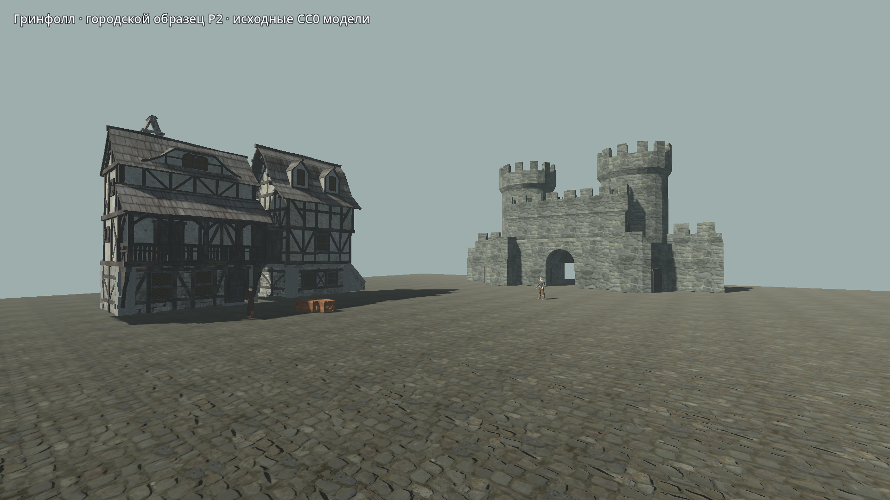
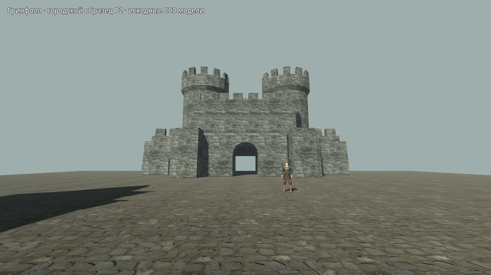
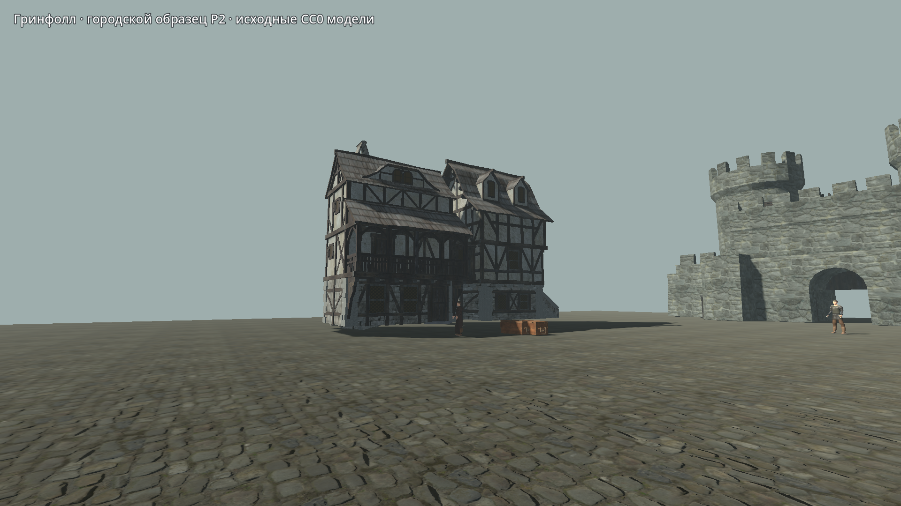
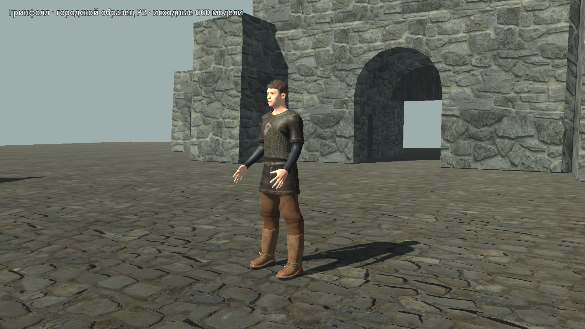
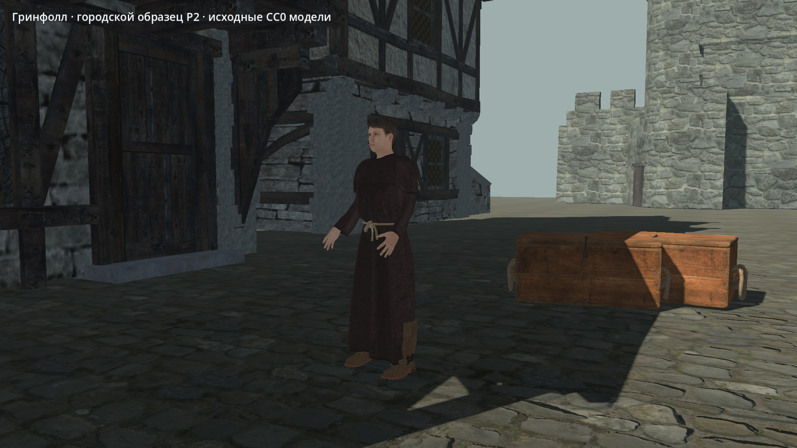

Фактические кадры Godot: отдельные CC0 здания и полноценные люди MakeHuman. Приёмка внешнего вида открыта. Это один ограниченный образец; вся крепость, интерьеры, расписания и боевые анимации NPC пока не готовы.




